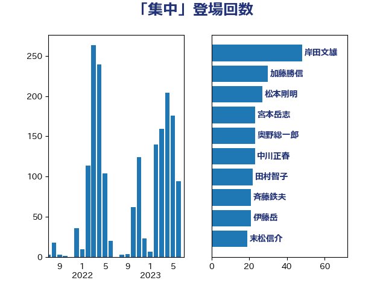

単語「集中」

| 岸田文雄 | 自由民主党 | 48 回 |
| 加藤勝信 | 自由民主党 | 30 回 |
| 松本剛明 | 自由民主党 | 27 回 |
| 宮本岳志 | 日本共産党 | 23 回 |
| 奥野総一郎 | 立憲民主党 | 23 回 |
| 中川正春 | 立憲民主党 | 23 回 |
| 田村智子 | 日本共産党 | 22 回 |
| 斉藤鉄夫 | 公明党 | 21 回 |
| 伊藤岳 | 日本共産党 | 21 回 |
| 末松信介 | 自由民主党 | 19 回 |
| 川田龍平 | 立憲民主党 | 19 回 |
| 北神圭朗 | 無所属 | 19 回 |
| 沢田良 | 日本維新の会 | 17 回 |
| 新藤義孝 | 自由民主党 | 17 回 |
| 吉良よし子 | 日本共産党 | 17 回 |
| 野田聖子 | 自由民主党 | 16 回 |
| 笠井亮 | 日本共産党 | 15 回 |
| 後藤茂之 | 自由民主党 | 15 回 |
| 高橋千鶴子 | 日本共産党 | 14 回 |
| 赤嶺政賢 | 日本共産党 | 14 回 |
| 芳賀道也 | 国民民主党 | 13 回 |
| 田嶋要 | 立憲民主党 | 13 回 |
| 小倉將信 | 自由民主党 | 13 回 |
| 金子恭之 | 自由民主党 | 12 回 |
| 西岡秀子 | 国民民主党 | 12 回 |
| 林芳正 | 自由民主党 | 12 回 |
| 山際大志郎 | 自由民主党 | 11 回 |
| 西銘恒三郎 | 自由民主党 | 10 回 |
| 西村康稔 | 自由民主党 | 10 回 |
| 舩後靖彦 | れいわ新選組 | 10 回 |
| 永岡桂子 | 自由民主党 | 10 回 |
| 山崎誠 | 立憲民主党 | 10 回 |
| 金子道仁 | 日本維新の会 | 9 回 |
| 紙智子 | 日本共産党 | 9 回 |
| 福島伸享 | 無所属 | 9 回 |
| 田村貴昭 | 日本共産党 | 9 回 |
| 岸真紀子 | 立憲民主党 | 9 回 |
| 谷田川元 | 立憲民主党 | 8 回 |
| 落合貴之 | 立憲民主党 | 8 回 |
| 舞立昇治 | 自由民主党 | 8 回 |
| 柚木道義 | 立憲民主党 | 8 回 |
| 新垣邦男 | 立憲民主党 | 8 回 |
| 岩渕友 | 日本共産党 | 8 回 |
| 岡本あき子 | 立憲民主党 | 8 回 |
| 山下芳生 | 日本共産党 | 8 回 |
| 高良鉄美 | 無所属 | 7 回 |
| 鈴木俊一 | 自由民主党 | 7 回 |
| 野間健 | 立憲民主党 | 7 回 |
| 足立康史 | 日本維新の会 | 7 回 |
| 萩生田光一 | 自由民主党 | 7 回 |
| 舟山康江 | 国民民主党 | 7 回 |
| 湯原俊二 | 立憲民主党 | 7 回 |
| 柴田巧 | 日本維新の会 | 7 回 |
| 室井邦彦 | 日本維新の会 | 7 回 |
| 古川元久 | 国民民主党 | 7 回 |
| 前原誠司 | 国民民主党 | 7 回 |
| 長友慎治 | 国民民主党 | 6 回 |
| 谷合正明 | 公明党 | 6 回 |
| 緑川貴士 | 立憲民主党 | 6 回 |
| 牧山ひろえ | 立憲民主党 | 6 回 |
| 渡辺創 | 立憲民主党 | 6 回 |
| 浅野哲 | 国民民主党 | 6 回 |
| 平林晃 | 公明党 | 6 回 |
| 堤かなめ | 立憲民主党 | 6 回 |
| 住吉寛紀 | 日本維新の会 | 6 回 |
| 階猛 | 立憲民主党 | 5 回 |
| 篠原孝 | 立憲民主党 | 5 回 |
| 神谷裕 | 立憲民主党 | 5 回 |
| 石橋通宏 | 立憲民主党 | 5 回 |
| 石川香織 | 立憲民主党 | 5 回 |
| 玉木雄一郎 | 国民民主党 | 5 回 |
| 浜田靖一 | 自由民主党 | 5 回 |
| 浜口誠 | 国民民主党 | 5 回 |
| 河野太郎 | 自由民主党 | 5 回 |
| 森山浩行 | 立憲民主党 | 5 回 |
| 斎藤嘉隆 | 立憲民主党 | 5 回 |
| 山本太郎 | れいわ新選組 | 5 回 |
| 嘉田由紀子 | 無所属 | 5 回 |
| 倉林明子 | 日本共産党 | 5 回 |
| 佐々木さやか | 公明党 | 5 回 |
| 中司宏 | 日本維新の会 | 5 回 |
| 三木圭恵 | 日本維新の会 | 5 回 |
| 馬場雄基 | 立憲民主党 | 4 回 |
| 須藤元気 | 無所属 | 4 回 |
| 青柳仁士 | 日本維新の会 | 4 回 |
| 阿部司 | 日本維新の会 | 4 回 |
| 長谷川淳二 | 自由民主党 | 4 回 |
| 鈴木義弘 | 国民民主党 | 4 回 |
| 金城泰邦 | 公明党 | 4 回 |
| 葉梨康弘 | 自由民主党 | 4 回 |
| 竹内真二 | 公明党 | 4 回 |
| 福重隆浩 | 公明党 | 4 回 |
| 福田昭夫 | 立憲民主党 | 4 回 |
| 礒崎哲史 | 国民民主党 | 4 回 |
| 田村まみ | 国民民主党 | 4 回 |
| 水野素子 | 立憲民主党 | 4 回 |
| 梅谷守 | 立憲民主党 | 4 回 |
| 東徹 | 日本維新の会 | 4 回 |
| 本村伸子 | 日本共産党 | 4 回 |
| 末次精一 | 立憲民主党 | 4 回 |
| 早稲田ゆき | 立憲民主党 | 4 回 |
| 庄子賢一 | 公明党 | 4 回 |
| 市村浩一郎 | 日本維新の会 | 4 回 |
| 岬麻紀 | 日本維新の会 | 4 回 |
| 山添拓 | 日本共産党 | 4 回 |
| 山本博司 | 公明党 | 4 回 |
| 尾身朝子 | 自由民主党 | 4 回 |
| 小林鷹之 | 自由民主党 | 4 回 |
| 宮本徹 | 日本共産党 | 4 回 |
| 大西健介 | 立憲民主党 | 4 回 |
| 塩村あやか | 立憲民主党 | 4 回 |
| 城井崇 | 立憲民主党 | 4 回 |
| 吉田宣弘 | 公明党 | 4 回 |
| 吉田とも代 | 日本維新の会 | 4 回 |
| 古賀千景 | 立憲民主党 | 4 回 |
| 北側一雄 | 公明党 | 4 回 |
| 伊波洋一 | 無所属 | 4 回 |
| 中西祐介 | 自由民主党 | 4 回 |
| 三ッ林裕巳 | 自由民主党 | 4 回 |
| 馬場伸幸 | 日本維新の会 | 3 回 |
| 鈴木英敬 | 自由民主党 | 3 回 |
| 野田国義 | 立憲民主党 | 3 回 |
| 野村哲郎 | 自由民主党 | 3 回 |
| 道下大樹 | 立憲民主党 | 3 回 |
| 進藤金日子 | 自由民主党 | 3 回 |
| 豊田俊郎 | 自由民主党 | 3 回 |
| 若松謙維 | 公明党 | 3 回 |
| 米山隆一 | 立憲民主党 | 3 回 |
| 福島みずほ | 社会民主党 | 3 回 |
| 福山哲郎 | 立憲民主党 | 3 回 |
| 田中健 | 国民民主党 | 3 回 |
| 牧野たかお | 自由民主党 | 3 回 |
| 片山さつき | 自由民主党 | 3 回 |
| 熊谷裕人 | 立憲民主党 | 3 回 |
| 清水貴之 | 日本維新の会 | 3 回 |
| 浅田均 | 日本維新の会 | 3 回 |
| 河西宏一 | 公明党 | 3 回 |
| 森英介 | 自由民主党 | 3 回 |
| 梶原大介 | 自由民主党 | 3 回 |
| 柴愼一 | 立憲民主党 | 3 回 |
| 松沢成文 | 日本維新の会 | 3 回 |
| 斎藤アレックス | 国民民主党 | 3 回 |
| 平将明 | 自由民主党 | 3 回 |
| 川崎ひでと | 自由民主党 | 3 回 |
| 岩谷良平 | 日本維新の会 | 3 回 |
| 岡田直樹 | 自由民主党 | 3 回 |
| 山崎正恭 | 公明党 | 3 回 |
| 山岸一生 | 立憲民主党 | 3 回 |
| 尾崎正直 | 自由民主党 | 3 回 |
| 小池晃 | 日本共産党 | 3 回 |
| 宮口治子 | 立憲民主党 | 3 回 |
| 天畠大輔 | れいわ新選組 | 3 回 |
| 塩田博昭 | 公明党 | 3 回 |
| 塩崎彰久 | 自由民主党 | 3 回 |
| 吉良州司 | 無所属 | 3 回 |
| 吉田はるみ | 立憲民主党 | 3 回 |
| 吉井章 | 自由民主党 | 3 回 |
| 勝部賢志 | 立憲民主党 | 3 回 |
| 前川清成 | 日本維新の会 | 3 回 |
| 今枝宗一郎 | 自由民主党 | 3 回 |
| 中野洋昌 | 公明党 | 3 回 |
| 一谷勇一郎 | 日本維新の会 | 3 回 |
| 齋藤健 | 自由民主党 | 2 回 |
| 高見康裕 | 自由民主党 | 2 回 |
| 高橋光男 | 公明党 | 2 回 |
| 高木かおり | 日本維新の会 | 2 回 |
| 高市早苗 | 自由民主党 | 2 回 |
| 音喜多駿 | 日本維新の会 | 2 回 |
| 青木愛 | 立憲民主党 | 2 回 |
| 鈴木貴子 | 自由民主党 | 2 回 |
| 重徳和彦 | 立憲民主党 | 2 回 |
| 遠藤良太 | 日本維新の会 | 2 回 |
| 越智俊之 | 自由民主党 | 2 回 |
| 赤木正幸 | 日本維新の会 | 2 回 |
| 西田実仁 | 公明党 | 2 回 |
| 藤巻健太 | 日本維新の会 | 2 回 |
| 藤岡隆雄 | 立憲民主党 | 2 回 |
| 茂木敏充 | 自由民主党 | 2 回 |
| 若宮健嗣 | 自由民主党 | 2 回 |
| 竹谷とし子 | 公明党 | 2 回 |
| 石破茂 | 自由民主党 | 2 回 |
| 石原正敬 | 自由民主党 | 2 回 |
| 石井苗子 | 日本維新の会 | 2 回 |
| 石井啓一 | 公明党 | 2 回 |
| 田畑裕明 | 自由民主党 | 2 回 |
| 源馬謙太郎 | 立憲民主党 | 2 回 |
| 渡辺周 | 立憲民主党 | 2 回 |
| 泉田裕彦 | 自由民主党 | 2 回 |
| 永井学 | 自由民主党 | 2 回 |
| 森田俊和 | 立憲民主党 | 2 回 |
| 森本真治 | 立憲民主党 | 2 回 |
| 森屋隆 | 立憲民主党 | 2 回 |
| 梅村聡 | 日本維新の会 | 2 回 |
| 柳ヶ瀬裕文 | 日本維新の会 | 2 回 |
| 松野博一 | 自由民主党 | 2 回 |
| 松本尚 | 自由民主党 | 2 回 |
| 松川るい | 自由民主党 | 2 回 |
| 末松義規 | 立憲民主党 | 2 回 |
| 朝日健太郎 | 自由民主党 | 2 回 |
| 早坂敦 | 日本維新の会 | 2 回 |
| 日下正喜 | 公明党 | 2 回 |
| 新妻秀規 | 公明党 | 2 回 |
| 打越さく良 | 立憲民主党 | 2 回 |
| 徳永久志 | 無所属 | 2 回 |
| 山田勝彦 | 立憲民主党 | 2 回 |
| 山本剛正 | 日本維新の会 | 2 回 |
| 山岡達丸 | 立憲民主党 | 2 回 |
| 山井和則 | 立憲民主党 | 2 回 |
| 小野田紀美 | 自由民主党 | 2 回 |
| 小野泰輔 | 日本維新の会 | 2 回 |
| 小沢雅仁 | 立憲民主党 | 2 回 |
| 小川淳也 | 立憲民主党 | 2 回 |
| 寺田稔 | 自由民主党 | 2 回 |
| 宮路拓馬 | 自由民主党 | 2 回 |
| 奥下剛光 | 日本維新の会 | 2 回 |
| 大島敦 | 立憲民主党 | 2 回 |
| 大塚耕平 | 国民民主党 | 2 回 |
| 堀井巌 | 自由民主党 | 2 回 |
| 國重徹 | 公明党 | 2 回 |
| 古川禎久 | 自由民主党 | 2 回 |
| 務台俊介 | 自由民主党 | 2 回 |
| 佐藤公治 | 立憲民主党 | 2 回 |
| 伊藤孝恵 | 国民民主党 | 2 回 |
| 井上貴博 | 自由民主党 | 2 回 |
| 中川貴元 | 自由民主党 | 2 回 |
| 中川宏昌 | 公明党 | 2 回 |
| 上田勇 | 公明党 | 2 回 |
| 上月良祐 | 自由民主党 | 2 回 |
| 三浦信祐 | 公明党 | 2 回 |
| ながえ孝子 | 無所属 | 2 回 |
| たがや亮 | れいわ新選組 | 2 回 |
| おおつき紅葉 | 立憲民主党 | 2 回 |
| 黄川田仁志 | 自由民主党 | 1 回 |
| 鰐淵洋子 | 公明党 | 1 回 |
| 高木真理 | 立憲民主党 | 1 回 |
| 高木宏壽 | 自由民主党 | 1 回 |
| 青柳陽一郎 | 立憲民主党 | 1 回 |
| 青島健太 | 日本維新の会 | 1 回 |
| 青山繁晴 | 自由民主党 | 1 回 |
| 阿達雅志 | 自由民主党 | 1 回 |
| 長浜博行 | 無所属 | 1 回 |
| 長島昭久 | 自由民主党 | 1 回 |
| 長坂康正 | 自由民主党 | 1 回 |
| 鎌田さゆり | 立憲民主党 | 1 回 |
| 鈴木庸介 | 立憲民主党 | 1 回 |
| 野中厚 | 自由民主党 | 1 回 |
| 辻元清美 | 立憲民主党 | 1 回 |
| 輿水恵一 | 公明党 | 1 回 |
| 谷川とむ | 自由民主党 | 1 回 |
| 谷公一 | 自由民主党 | 1 回 |
| 角田秀穂 | 公明党 | 1 回 |
| 藤原崇 | 自由民主党 | 1 回 |
| 藤井比早之 | 自由民主党 | 1 回 |
| 藤井一博 | 自由民主党 | 1 回 |
| 藤丸敏 | 自由民主党 | 1 回 |
| 菊田真紀子 | 立憲民主党 | 1 回 |
| 自見はなこ | 自由民主党 | 1 回 |
| 美延映夫 | 日本維新の会 | 1 回 |
| 細田健一 | 自由民主党 | 1 回 |
| 笠浩史 | 無所属 | 1 回 |
| 窪田哲也 | 公明党 | 1 回 |
| 穂坂泰 | 自由民主党 | 1 回 |
| 穀田恵二 | 日本共産党 | 1 回 |
| 稲富修二 | 立憲民主党 | 1 回 |
| 秋葉賢也 | 自由民主党 | 1 回 |
| 神谷宗幣 | 参政党 | 1 回 |
| 神田憲次 | 自由民主党 | 1 回 |
| 石川昭政 | 自由民主党 | 1 回 |
| 石川大我 | 立憲民主党 | 1 回 |
| 石垣のりこ | 立憲民主党 | 1 回 |
| 石井章 | 日本維新の会 | 1 回 |
| 石井準一 | 自由民主党 | 1 回 |
| 石井浩郎 | 自由民主党 | 1 回 |
| 石井拓 | 自由民主党 | 1 回 |
| 白石洋一 | 立憲民主党 | 1 回 |
| 田野瀬太道 | 無所属 | 1 回 |
| 田島麻衣子 | 立憲民主党 | 1 回 |
| 田中英之 | 自由民主党 | 1 回 |
| 玄葉光一郎 | 立憲民主党 | 1 回 |
| 牧原秀樹 | 自由民主党 | 1 回 |
| 片山大介 | 日本維新の会 | 1 回 |
| 漆間譲司 | 日本維新の会 | 1 回 |
| 浦野靖人 | 日本維新の会 | 1 回 |
| 浜野喜史 | 国民民主党 | 1 回 |
| 浜地雅一 | 公明党 | 1 回 |
| 浅川義治 | 日本維新の会 | 1 回 |
| 浅尾慶一郎 | 自由民主党 | 1 回 |
| 泉健太 | 立憲民主党 | 1 回 |
| 河野義博 | 公明党 | 1 回 |
| 池畑浩太朗 | 日本維新の会 | 1 回 |
| 池下卓 | 日本維新の会 | 1 回 |
| 江島潔 | 自由民主党 | 1 回 |
| 水岡俊一 | 立憲民主党 | 1 回 |
| 櫻井周 | 立憲民主党 | 1 回 |
| 櫛渕万里 | れいわ新選組 | 1 回 |
| 横沢高徳 | 立憲民主党 | 1 回 |
| 横山信一 | 公明党 | 1 回 |
| 梅村みずほ | 日本維新の会 | 1 回 |
| 松山政司 | 自由民主党 | 1 回 |
| 杉本和巳 | 日本維新の会 | 1 回 |
| 本庄知史 | 立憲民主党 | 1 回 |
| 木村英子 | れいわ新選組 | 1 回 |
| 星北斗 | 自由民主党 | 1 回 |
| 新谷正義 | 自由民主党 | 1 回 |
| 斎藤洋明 | 自由民主党 | 1 回 |
| 徳永エリ | 立憲民主党 | 1 回 |
| 平口洋 | 自由民主党 | 1 回 |
| 山田賢司 | 自由民主党 | 1 回 |
| 山田宏 | 自由民主党 | 1 回 |
| 山田太郎 | 自由民主党 | 1 回 |
| 山本香苗 | 公明党 | 1 回 |
| 山本順三 | 自由民主党 | 1 回 |
| 山口那津男 | 公明党 | 1 回 |
| 山口壯 | 自由民主党 | 1 回 |
| 山下雄平 | 自由民主党 | 1 回 |
| 小西洋之 | 立憲民主党 | 1 回 |
| 小山展弘 | 立憲民主党 | 1 回 |
| 寺田静 | 無所属 | 1 回 |
| 寺田学 | 立憲民主党 | 1 回 |
| 宮崎勝 | 公明党 | 1 回 |
| 宗清皇一 | 自由民主党 | 1 回 |
| 守島正 | 日本維新の会 | 1 回 |
| 太栄志 | 立憲民主党 | 1 回 |
| 大石あきこ | れいわ新選組 | 1 回 |
| 大島九州男 | れいわ新選組 | 1 回 |
| 大岡敏孝 | 自由民主党 | 1 回 |
| 大串博志 | 立憲民主党 | 1 回 |
| 塩川鉄也 | 日本共産党 | 1 回 |
| 堀場幸子 | 日本維新の会 | 1 回 |
| 坂本祐之輔 | 立憲民主党 | 1 回 |
| 和田政宗 | 自由民主党 | 1 回 |
| 吉田久美子 | 公明党 | 1 回 |
| 吉川沙織 | 立憲民主党 | 1 回 |
| 吉川元 | 立憲民主党 | 1 回 |
| 古賀之士 | 立憲民主党 | 1 回 |
| 古川直季 | 自由民主党 | 1 回 |
| 古屋範子 | 公明党 | 1 回 |
| 古屋圭司 | 自由民主党 | 1 回 |
| 勝俣孝明 | 自由民主党 | 1 回 |
| 加藤竜祥 | 自由民主党 | 1 回 |
| 佐藤英道 | 公明党 | 1 回 |
| 伴野豊 | 立憲民主党 | 1 回 |
| 伊藤渉 | 公明党 | 1 回 |
| 井坂信彦 | 立憲民主党 | 1 回 |
| 井原巧 | 自由民主党 | 1 回 |
| 中野英幸 | 自由民主党 | 1 回 |
| 中谷真一 | 自由民主党 | 1 回 |
| 中条きよし | 日本維新の会 | 1 回 |
| 中川康洋 | 公明党 | 1 回 |
| 中島克仁 | 立憲民主党 | 1 回 |
| 下野六太 | 公明党 | 1 回 |
| こやり隆史 | 自由民主党 | 1 回 |